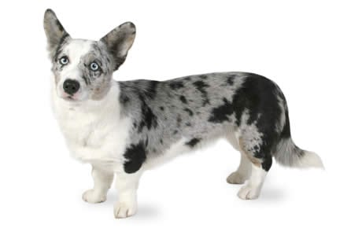

The cardigan is the less popular of the two breeds but the older of the two by almost 2000 years!
It is believed they were brought over by the Celts to Wales around 1200 BC.
Physical Characteristics of a Cardigan:
- Long fox-like tail
- Larger/heavier bones
- Fur colors are more varied than pembroke
- Red & Sable with White
- Brindle
- Tri-colored (white, black, and tan)
- Blue merle
- Large rounded ears
- A head and face shape closer to that of a German Shepard
